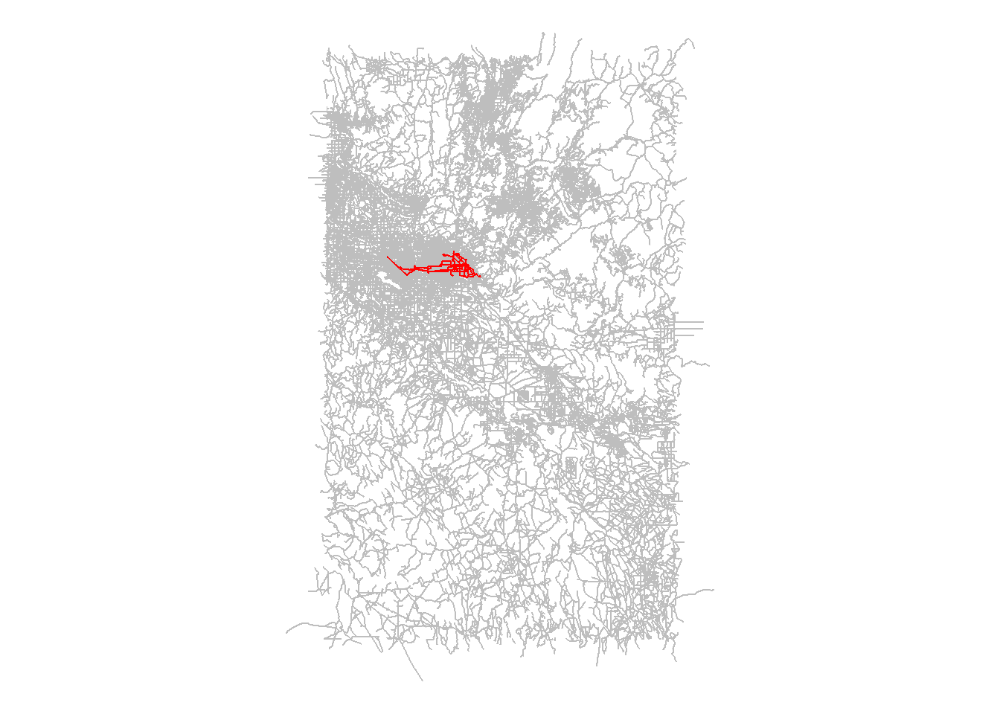
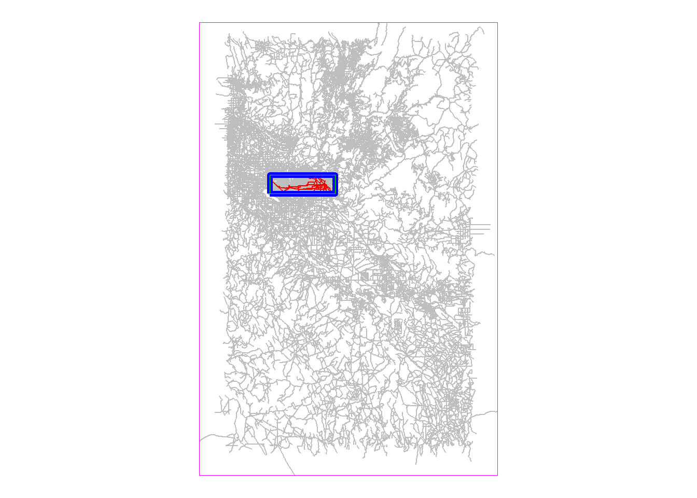
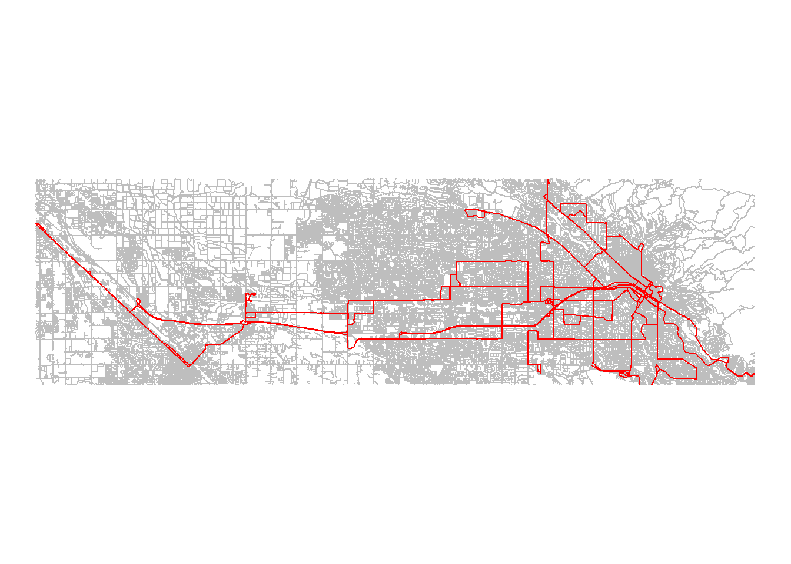
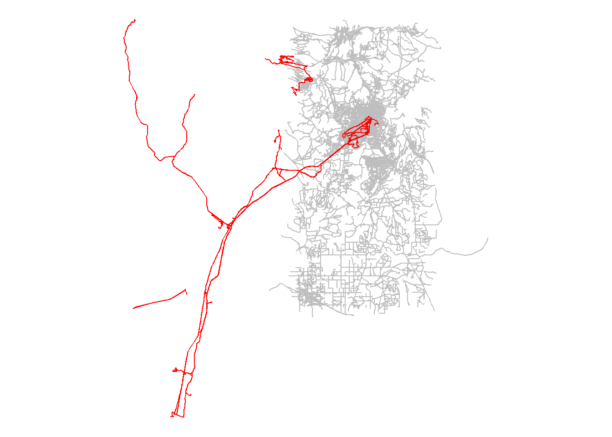
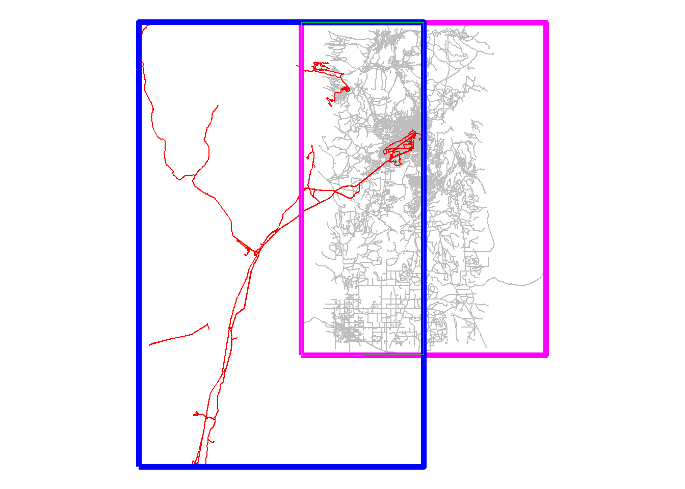
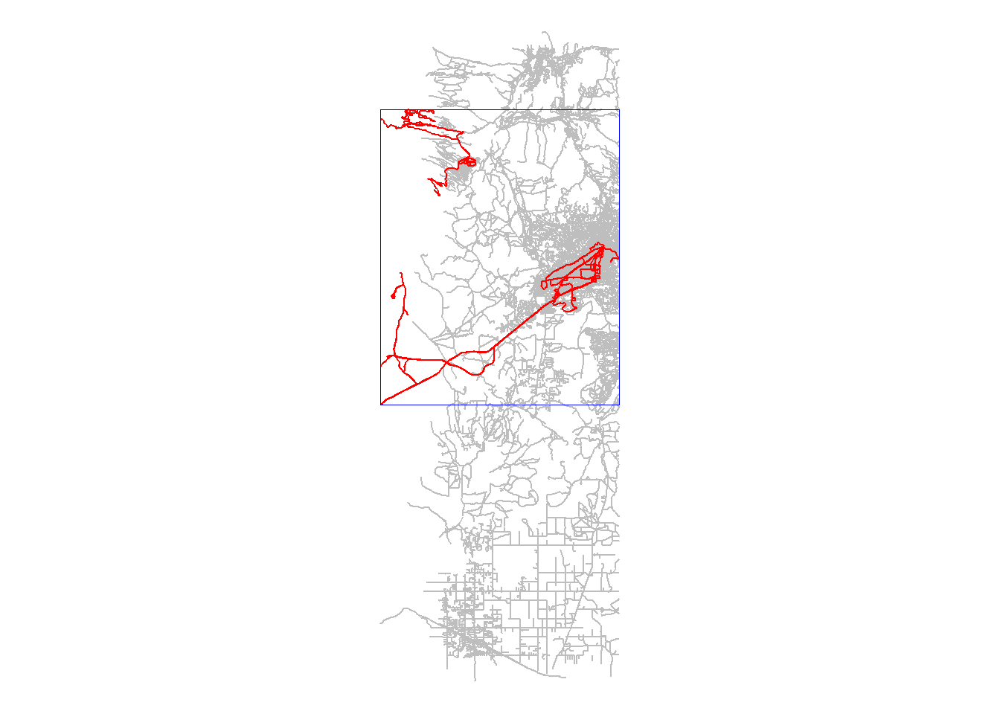
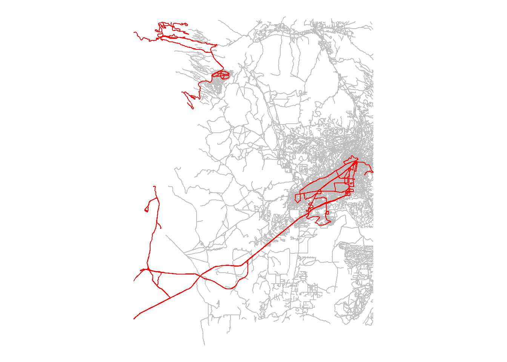

options(java.parameters = '-Xmx2G')
library(tidyverse)
library(sf)
library(r5r)
library(here)
library(knitr)
library(tidytransit)Geography details for Problem Set 3
Load the packages
First load the packages:
Initialize R5
Now initialize an R5 core for each of these study areas:
Boise City, Idaho
Santa Fe, New Mexico
boise_core <- here("network-files",
"Boise-City-ID") |>
setup_r5()
santa_fe_core <- here("network-files",
"Santa-Fe-NM") |>
setup_r5()Map streets and routes
We can generate line layers of the streets and routes that are included in our network.
boise_streets <- street_network_to_sf(boise_core)$edges
boise_routes <- transit_network_to_sf(boise_core)$routes
santa_fe_streets <- street_network_to_sf(santa_fe_core)$edges
santa_fe_routes <- transit_network_to_sf(santa_fe_core)$routesAnd we can plot them on a map.
Boise
Here’s Boise:
ggplot(boise_streets) +
geom_sf(color = "gray") +
geom_sf(data = boise_routes,
color = "red") +
theme_void()
The transit network is mostly limited to Boise City, but the street network is for a rectangle containing the entire metro area. Let’s define our study area as just the area within the metro area (or a box containing the metro area) that is served by transit.
We’ll draw a box around the transit service area:
boise_routes_bbox <- st_bbox(boise_routes) |>
st_as_sfc()And then we’ll draw a box around the street network:
boise_streets_bbox <- st_bbox(boise_streets) |>
st_as_sfc()And now we’ll define a box that’s just the overlapping area between those two boxes.
boise_area <- st_intersection(boise_routes_bbox,
boise_streets_bbox)Here’s a map showing those three boxes. In this case, the box for the study area is the same as the box for the transit routes.
ggplot() +
geom_sf(data = boise_streets,
color = "gray") +
geom_sf(data = boise_routes,
color = "red") +
geom_sf(data = boise_streets_bbox,
color = "magenta",
fill = NA) +
geom_sf(data = boise_routes_bbox,
color = "blue",
linewidth = 2,
fill = NA) +
geom_sf(data = boise_area,
color = "green",
fill = NA) +
theme_void()
We’ll filter our transit network and street network to only include the area in that overlapping area. While we’re add it, we’ll convert it to a “MULTILINESTRING” datatype, which will facilitate exporting these layers to a format that we can work with in ArcGIS software if we want to later.
boise_area_routes <- st_intersection(boise_routes, boise_area) |>
st_cast("MULTILINESTRING")
boise_area_streets <- st_intersection(boise_streets, boise_area) |>
st_cast("MULTILINESTRING")And now we can plot just the roads and streets in our study area:
ggplot() +
geom_sf(data = boise_area_streets,
color = "gray") +
geom_sf(data = boise_area_routes,
color = "red") +
theme_void()
Santa Fe
Now let’s take a look at our routes and streets in Santa Fe:
ggplot() +
geom_sf(data = santa_fe_streets,
color = "gray") +
geom_sf(data = santa_fe_routes,
color = "red") +
theme_void()
This time, not only have a road network that extends beyond our transit network, we also have a transit network that extends beyond the Santa Fe metro area (to the Albuquerque metro area).
Again, we’ll define our study area as just the area within the metro area (or a box containing the metro area) that is served by transit.
We’ll draw a box around the transit service area:
santa_fe_routes_bbox <- st_bbox(santa_fe_routes) |>
st_as_sfc() And then we’ll draw a box around the street network:
santa_fe_streets_bbox <- st_bbox(santa_fe_streets) |>
st_as_sfc()And now we’ll define a box that’s just the overlapping area between those two boxes.
santa_fe_area <- st_intersection(santa_fe_routes_bbox,
santa_fe_streets_bbox)Here’s a map showing those three boxes.
ggplot() +
geom_sf(data = santa_fe_streets,
color = "gray") +
geom_sf(data = santa_fe_routes,
color = "red") +
geom_sf(data = santa_fe_streets_bbox,
color = "magenta",
linewidth = 2,
fill = NA) +
geom_sf(data = santa_fe_routes_bbox,
color = "blue",
linewidth = 2,
fill = NA) +
geom_sf(data = santa_fe_area,
color = "green",
fill = NA) +
theme_void()
Again, we’ll filter our transit network and street network to only include the area in that overlapping area (and convert it to a “MULTILINESTRING” datatype).
santa_fe_area_routes <- st_intersection(santa_fe_routes, santa_fe_area) |>
st_cast("MULTILINESTRING")
santa_fe_area_streets <- st_intersection(santa_fe_streets, santa_fe_area) |>
st_cast("MULTILINESTRING")And we can plot that:
ggplot() +
geom_sf(data = santa_fe_area_streets,
color = "gray") +
geom_sf(data = santa_fe_area_routes,
color = "red") +
theme_void()But here, because of the orientation of the transit service to Albuquerque, there’s still a lot of area in that overlapping box that isn’t served by transit at all.
We could narrow the study area further, by creating a new (smaller) bounding box around the newly filtered transit network.
santa_fe_transit_area <- st_bbox(santa_fe_area_routes) |>
st_as_sfc()Now here is that new bounding box on a map:
ggplot() +
geom_sf(data = santa_fe_area_streets,
color = "gray") +
geom_sf(data = santa_fe_area_routes,
color = "red") +
geom_sf(data = santa_fe_transit_area,
color = "blue",
fill = NA) +
theme_void()
And let’s filter the streets to include only that smaller area:
santa_fe_area_streets <- santa_fe_area_streets |>
st_filter(santa_fe_transit_area)And here are the routes and streets in our new study area:
ggplot() +
geom_sf(data = santa_fe_area_streets,
color = "gray") +
geom_sf(data = santa_fe_area_routes,
color = "red") +
theme_void()
Stop R5
Remember to stop R5 when you’re done.
stop_r5()